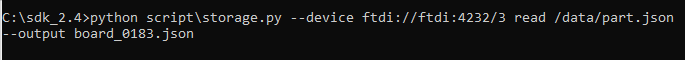

Software Installation
VirtualBox Ubuntu 20.04
Downloading the VirtualBox Ubuntu Image
Navigate to https://www.osboxes.org/ubuntu/ and download the Ubuntu 20.04 image for VirtualBox:

Figure 1: Ubuntu VirtualBox image
Installing 7-Zip
The downloaded file Ubuntu-20.04-VB-64bit is a 7-Zip archive containing the Ubuntu VirtualBox image. 7- Zip will need to be installed to extract the image. If you already have 7-Zip installed, skip to the next section: Extracting the Ubuntu Image.
Navigate to https://www.7-zip.org/ and download the 7-Zip installer:
Figure 2: 7-Zip installer download
Run the downloaded .exe and follow the prompts to install 7-Zip.
Extracting the Ubuntu Image
With 7-Zip installed, right click on Ubuntu-20.04-VB-64bit.7z from the downloads within Windows Explorer and select 7-Zip –> Extract Files:
Figure 3:To extract the vdi files
Create a path in the D drive to store the VDI file and add the path from drop down menu or from the tab (), in this case the path is D:\Innophase\VirtualBox VMs
Figure 4: Extracting the Ubuntu VirtualBox image to D drive path
This will create a folder containing Ubuntu 20.04 (64bit), the Ubuntu 20.04 VirtualBox disk image (VDI) file.
Figure 5: Extracted VDI file
Installing VirtualBox
Navigate to https://www.virtualbox.org/wiki/Downloads and download VirtualBox 6.1.18 for Windows hosts:
Figure 6: VirtualBox binary download
Run the downloaded.exe and follow the prompts to install VirtualBox. Ensure VirtualBox USB Support is selected (this is the default).
Figure 7: Leave VirtualBox USB Support enabled
Follow the rest of the prompts to complete installation.
Setting up the Virtual Machine
Launch VirtualBox, and you will be presented with the VirtualBox Manager. Click New to create a new virtual machine

Figure 8: The VirtualBox Manager
Give the virtual machine a descriptive name, for example, Ubuntu 20.04. Verify that VirtualBox has picked up the correct Type and Version for the virtual machine and click Next.
Figure 9: Creating a new virtual machine
You will now be prompted to allocate memory to the virtual machine. Provide at least 4GB for smooth operation and press Next

Figure 10: Virtual machine memory allocation
Before proceeding with virtual machine creation, see if the Ubuntu 20.04 VirtualBox disk image (VDI) file into the appropriate VirtualBox VM folder that has been created. Open a Windows Explorer window, type the following into the address bar, and press Enter
%HOMEPATH%\VirtualBox VMs\64bit\Ubuntu 20.04 (64bit) |
|---|
Note: %HOMEPATH% is the path of the newly created VDI path of D drive.
Return to the virtual machine creation wizard using the Windows taskbar. When prompted to add a virtual hard disk, select Use an existing virtual hard disk file and click on the folder icon.
Figure 11: Virtual machine hard disk selection
In the dialog that appears, click the Add button.
Figure 12: Adding an existing virtual hard disk
Navigate to the VDI file you just moved and select it.
Figure 13: Selecting the existing virtual hard disk
Accept this virtual hard disk as the disk for the virtual machine in the dialog boxes.
Press Create to create the virtual machine. Once the virtual machine has been created, start it from the VirtualBox Manager by pressing the Start button.
Figure 14: Press the Start button to start the virtual machine
The virtual machine should now start. If it does not, you may be presented with an error saying that VT-x or AMD-V is disabled in the BIOS.
Figure 15: Error message reporting that VT-x is disabled
Hardware virtualization (VT-x / AMD-V) is required to run a 64-bit guest in VirtualBox and you will therefore be required to enable it from within the BIOS settings of your computer. The procedure for doing this varies from computer to computer, so detailed instructions are not supplied here. However, the general procedure involves rebooting your computer and pressing a key before Windows boots to access the BIOS settings menu. Once in the BIOS settings menu, enable hardware virtualization and boot into Windows. Open the VirtualBox Manager and try to start the virtual machine again.
When the virtual machine starts, login with the following when prompted:
Username: osboxes.org
Password: osboxes.org
Installing Guest Additions
From the virtual machine menu, select Devices –> Insert Guest Additions CD image
Figure 16: Inserting the guest additions CD
When prompted, select Run to run the software from the Guest Additions CD. Allow the Guest Additions software to install, entering the password osboxes.org and following any prompts as required. After the install has completed, eject the Guest Additions CD from the desktop and reboot the virtual machine.
Opening a Terminal
Further steps in this guide will require you to open a terminal window in Ubuntu. Right click from any location in Files, the graphical filesystem explorer, and select Open in Terminal
Figure 18: Opening a terminal in Ubuntu
This will open a terminal window in that directory in which commands can be typed.
Figure 19: A terminal window
Installing Necessary Packages
In any terminal window, execute the following commands, enter the password which was used for the creation in section: Setting up the Virtual Machine, point 12.
sudo apt update sudo apt install build-essential libc6-armel-cross libc6-dev-armel-cross binutils-arm-linux-gnueabi libncurses5-dev -y |
|---|
Downloading the ARM Toolchain
From within a directory of your choice, execute the following command in a terminal window to download the ARM toolchain archive
wget https://developer.arm.com/-/media/Files/downloads/gnu -rm/10.3-2021.10/gcc-arm-none-eabi-10.3-2021.10-x86_64-linux.tar.bz2 |
|---|
Execute the following command to extract the toolchain from the archive
tar xvf gcc-arm-none-eabi-10.3-2021.10-x86_64-linux.tar.bz2 |
|---|
Execute the following command to move the toolchain to the common usr folder, enter the password as prompted
sudo mv gcc-arm-none-eabi-10.3-2021.10 /usr/ |
|---|
Note: The following two steps (step 4and 5) and should be followed only while using a virtual machine and must be skipped while using the standalone OS.
Execute the following commands to set up the toolchain path
echo >> ~/.profile echo ‘export PATH=/usr/ gcc-arm-none-eabi-10.3-2021.10/bin:$PATH’ >> ~/.profile |
|---|
Reboot the virtual machine so that the changes to PATH are applied
Installing Python3 and dependencies
In any terminal window, execute the following commands to install Python3 and other Python packages that will be needed. Enter the password as prompted
sudo apt install python3 -y sudo apt install python3-pip -y pip3 install pyelftools pyserial pyusb pyftdi ecdsa pycryptodome |
|---|
Installing OpenOCD
In any terminal window, execute the following command to install OpenOCD. Enter the password as prompted
sudo apt install openocd -y |
|---|
Downloading and Compiling the InnoPhase SDK
Check with your InnoPhase support team to obtain the latest version of the SDK.
Download the SDK zip file in the Ubuntu virtual machine. Open a terminal in the directory in which you downloaded the SDK and execute the following commands:
unzip sdk<version>.zip (Example: unzip sdk_2.3.zip) cd sdk/apps/ make |
|---|
This will create an ELF file for each of the applications shared with the SDK.
Setting Execute Permissions for SDK Scripts
This step ensures that the file permissions for the Python scripts in the SDK are set to allow for execution. To accomplish this, open a terminal in the SDK directory and execute the following command:
cd .. chmod -R u+x ./script/*.py |
|---|
Connecting the EVK board
Connect the EVK board to the PC using the provided Micro USB cable. Transfer port access rights to the Ubuntu virtual machine. From the virtual machine menu select Devices –> USB -> InnoPhase EVB[0800] or FTDI InnoPhase T2 Evaluation Board [0800].
Figure 20: Transferring port access rights to the Ubuntu virtual machine

{kind=link}
{kind=link}
{kind=link}
{kind=link}
{kind=link}
{kind=link}
{kind=link}
{kind=link}
{kind=link}
{kind=link}
{kind=link}
{kind=link}
{kind=link}
{kind=link}
{kind=link}
{kind=link}
{kind=link}
In any terminal window, execute the following commands to ensure Ubuntu recognizes the EVK board
lsusb |
|---|
The following USB device should be listed in the output:
{kind=link}
Figure 21: Verifying that Ubuntu recognizes the EVK board
To ensure atleast four USB serial devices are listed, execute the following command:
ls /dev/ttyUSB* |
|---|
At least four USB serial devices should be listed:
Figure 22: USB serial devices
Note: This output should contain 4 entries. In some cases, the entries could be different - /dev/ttyUSBX, where X is not between 1-4 (Eg.: /dev/ttyUSB5 instead of /dev/ttyUSB4), which is acceptable
Opening the Console
In any terminal window, execute the following command to open a CONSOLE to Talaria TWO
sudo apt install python3-serial miniterm /dev/ttyUSB3 2457600 |
|---|
The connection should be established without errors.
{kind=link}
Figure 23: Establishment of a CONSOLE to the T2
Hardware setup is now complete.
Download and Test Provided Sample Application
With the software and hardware setup complete, you are now ready to download an application to Talaria TWO. Before following these steps, ensure that you have a CONSOLE open to Talaria TWO, as described in the section: Installing Guest Additions.
Press the Reset button on the EVK board. Open a terminal in the SDK directory and browse through the path “/SDK_x.y/”. , then execute the following commands:
Load the flash helper:
./script/boot.py –device /dev/ttyUSB2 –reset=evk42_bl ./apps/gordon/bin/gordon.elf |
|---|
Expected output:
{kind=link}
Figure 24: Load the flash helper
Invalidate the boot image:
dd if=/dev/zero of=./empty.img bs=1K count=1 |
|---|
Expected output:
Figure 25: Invalidate the boot image
Clear the flash:
./script/flash.py –device /dev/ttyUSB2 write 0x1000 ./empty.img |
|---|
Expected output:
Figure 26: Clear flash
Program the application:
./script/boot.py –device /dev/ttyUSB2 –reset=evk42 binaries/product/at/bin/t2_atcmds.elf hio.transport=0 |
|---|
Expected output:
Figure 27: Program the application
Note:
Place the –reset=evk42 before the target elf file path.
hio.transport=<value> is the interface type for command link.
where, <value> can be one of the following:
0: UART
1: SPI
Expected output:
{kind=link}
Figure 28: Downloading the Serial to Wi-Fi application
Console output:
{kind=link}
Figure 29: CONSOLE output when downloading the Serial to Wi-Fi application
From within your terminal window, start the host side script to interact with Talaria TWO by executing the following command:
./script/talaria_cli.py /dev/ttyUSB2 |
|---|
You will be presented with a list of commands and a dropped into a CLI prompt. Type create and press Enter.
{kind=link}
Figure 30: Execution of the CLI application on the host
Console output:
Note: Console output can vary between SDK releases
{kind=link}
Figure 31: CONSOLE output when executing the “create” command
A Wi-Fi interface has been created. Now, other commands available in the CLI prompt can be tried for further use.